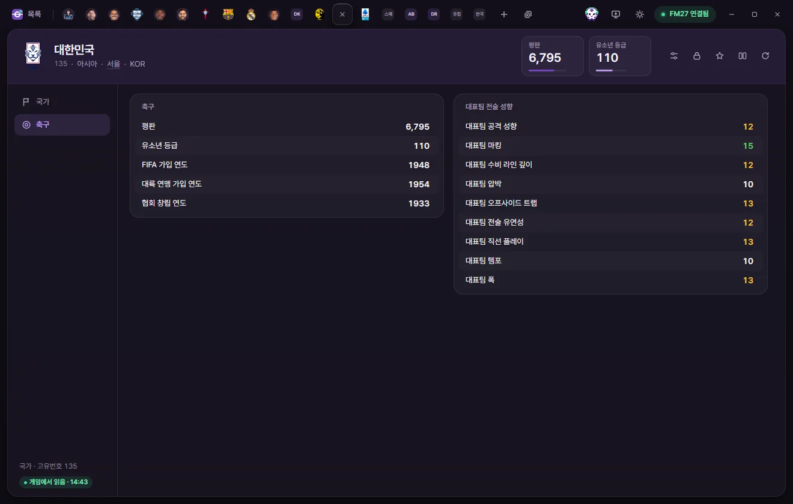

Edit tabs
Nation
How to edit a nation's nationality rules, population and economy, reputation, youth rating, and national team tactical style.

Opening a Nation tab
Click a nation's name in the Nations list, or click any underlined country name—such as a player's nationality or a club's nation. Editing and saving values work just like on the Player tab. Editing values on the Player page
Tab header
- Below the nation's name, you'll see its Unique ID, Continent, Capital city, and 3-letter code.
- The number cards show Reputation (1–10000) and Youth rating (0–200)—click either card to type a new number directly.
- On the right are buttons for Presets, Locks, Bookmarks, Compare, and Reload from game. Nation tabs do not have a ⚡ button.
There are two subpages: Nation and Football.
Nation
Overview
All fields in this section are read-only.
| Field | What it does |
|---|---|
| Unique ID, Name, Short name, 3-letter code, Alternative name, Alternative code | The nation's names and codes |
| Capital city | Click to open the City tab |
| Continent, Confederation | |
| Currency | The currency used in this nation |
| Exchange rate (per £1) | How much £1 is worth in this nation's currency (e.g., England 1, South Korea 1,837.8). FMAX uses this rate to convert monetary amounts into the currency chosen in Settings |
| National stadium | Click to open the Stadium tab |
| Playable nation | Turned on for 59 nations, matching the nations whose leagues can be selected in FM27 |
Nationality rules
| Field | What it does | Editable range |
|---|---|---|
| Does not allow dual nationality | Enabled for nations including China, Japan, India, Indonesia, and Ukraine | Yes, No |
| Years to gain nationality | How many years a player must live in the country to gain citizenship (e.g., England 5, Spain 10, Argentina 2). 255 (None) means nationality cannot be gained | 0–255 years |
| Gain nationality type | Continuous residency (must live there uninterrupted for the full period) or Cumulative residency (separate stays are added together)—known in FM as 'Gain Nationality Type' | Dropdown |
| Nations treated as EU | Each row represents a single nation or agreement (nation, agreement, Excluded nations, start, end) | Read-only |
| Nations treated as non-foreign | For example, South Korea treats North Korean players as non-foreign, and China treats Taiwanese players as non-foreign. Region-based entries (such as on England) cannot read the region name yet | Read-only |
Population & geography
| Field | What it does | Editable range |
|---|---|---|
| Population | 0–2 billion | |
| Northernmost latitude, Southernmost latitude, Westernmost longitude, Easternmost longitude | Geographic bounds of the country | Read-only |
| Economic factor | 0–20 | |
| Development level | Developed state, Developing state, Least developed state | Dropdown |
Agreements
Lists Joined agreements (agreement, date joined, date left). This list is read-only; click an entry to open its Agreement tab.
Football


| Group | Field | Editable range |
|---|---|---|
| Football | Reputation | 1–10000 |
| Football | Youth rating | 0–200 |
| Football | Year joined FIFA, Year joined confederation, Year association founded | 1850–2100 |
| National team tactical style | National team attacking, Defensive Line depth, Directness, Tactical flexibility, Marking, Offsides trap, Pressing, Tempo, Width | 1–20 |
National team staff appointments are handled from the ⚡ menu on Staff tabs ('Add to national team' and 'Terminate national team contract') rather than on this tab. Game editor (⚡)